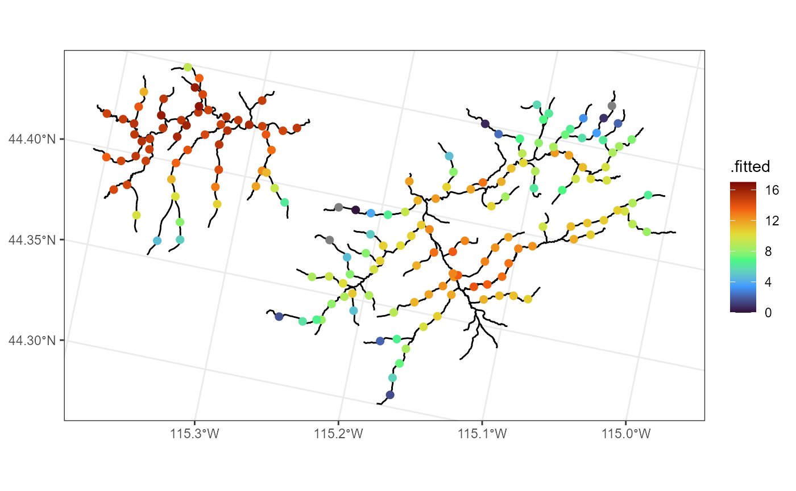
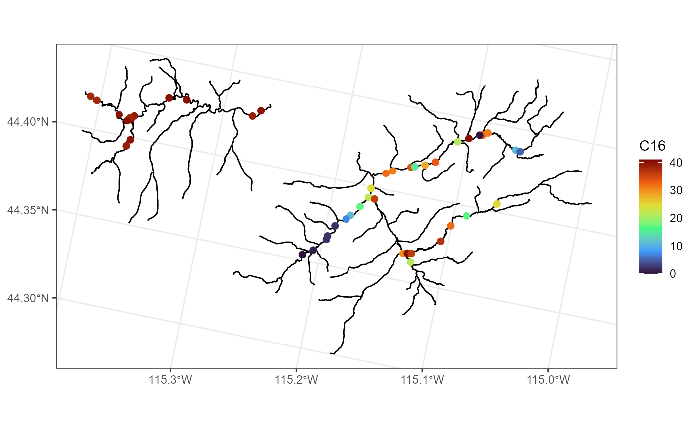

An Introduction to Spatial Stream Network Modeling in R Using SSN2
Michael Dumelle, Erin Peterson, Jay M. Ver Hoef, Alan Pearse, and Dan Isaak
Source:vignettes/introduction.Rmd
introduction.RmdBackground
Data from streams frequently exhibit unique patterns of spatial autocorrelation resulting from the branching network structure, longitudinal (i.e., upstream/downstream) connectivity, directional water flow, and differences in flow volume throughout the network (Erin E. Peterson et al. 2013). In addition, stream networks are embedded within a spatial environment, which can also influence observations on the stream network. Traditional spatial statistical models, which are based solely on Euclidean distance, often fail to adequately describe these unique and complex spatial dependencies.
Spatial stream network models are based on a moving-average construction (J. M. Ver Hoef and Peterson 2010) and are specifically designed to describe two unique spatial relationships found in streams data. A pair of sites is considered flow-connected when water flows from an upstream site to a downstream site. Sites are flow-unconnected when they reside on the same stream network (i.e., share a common junction downstream) but do not share flow.
Spatial stream network models typically rely on two families of covariance functions to represent these relationships: the tail-up and tail-down models. In a tail-up model, the moving-average function points in the upstream direction. Covariance is a function of stream distance and a weighting structure used to proportionally allocate, or split, the function at upstream junctions to account for differences in flow volume or other influential variables (Erin E. Peterson and Ver Hoef 2010). As a result, non-zero covariances are restricted to flow-connected sites in a tail-up model. In a tail-down model, the moving average function points in the downstream direction. In contrast to the tail-up model, tail-down models allow for both flow-connected and flow-unconnected autocorrelation, autocorrelation will always be equal or stronger for flow-unconnected sites than flow-connected sites separated by equal stream distances (J. M. Ver Hoef and Peterson 2010). In the tail-down model, covariance is a function of stream distance and weights are not required. However, it is also possible and often preferable to build spatial stream network models based on a mixture of four components: a tail-up component, a tail-down component, a Euclidean component, and a nugget component. The Euclidean component is useful because it captures covariance in influential processes that are independent of the stream network at intermediate and broad scales (e.g., air temperature, soil type, or geology). The nugget component captures covariance in processes that are highly localized, thus being independent across sites. For more details regarding the construction of spatial stream network models and their covariance components, see Cressie et al. (2006), J. M. Ver Hoef, Peterson, and Theobald (2006), J. M. Ver Hoef and Peterson (2010), Erin E. Peterson and Ver Hoef (2010), and Isaak et al. (2014).
The SSN2 R package is used to fit and
summarize spatial stream network models and make predictions at
unobserved locations (Kriging). SSN2 is an updated version
of the SSN R package (J. Ver Hoef et al. 2014). Why did we create
SSN2 to replace the SSN R
package? There are two main reasons:
-
The
SSNR package depends on thergdal(Bivand, Keitt, and Rowlingson 2021),rgeos(Bivand and Rundel 2020), andmaptools(Bivand and Lewin-Koh 2021) R packages, which were retired in October, 2023. Their functionality has been replaced and modernized by thesfpackage (Pebesma 2018).SSN2depends onsfinstead ofrgdal,rgeos, andmaptools, reflecting this broader change regarding handling spatial data in R.- See Nowosad (2023) for more
information regarding the retirement of
rgdal,rgeos, andmaptools, available at this link.
- See Nowosad (2023) for more
information regarding the retirement of
There are features added to
SSN2that would have been difficult to implement in theSSNR package without a massive restructuring of its foundation, so a new package was created. For example, theSSNobjects inSSN2are S3 objects but theSSNobjects in theSSNR package were S4 objects. Additionally, many functions were rewritten and/or repurposed inSSN2to use generic functions (e.g., block prediction inSSN2is performed usingpredict()while in theSSNR package it was performed usingBlockPredict()). Moreover,SSN2leverages many of the tools in thespmodelR package for spatial statistical modeling (Dumelle, Higham, and Ver Hoef 2023).
This vignette provides an overview of basic features in
SSN2. We load SSN2 by running
If you use SSN2 in a formal publication or report,
please cite it. Citing SSN2 lets us devote more resources
to it in the future. We view the SSN2 citation by
running
citation(package = "SSN2")#> To cite SSN2 in publications use:
#>
#> Dumelle M, Peterson, E, Ver Hoef JM, Pearse A, Isaak D (2023). SSN2:
#> Spatial Modeling on Stream Networks in R. R package version 0.2.0
#>
#> A BibTeX entry for LaTeX users is
#>
#> @Manual{,
#> title = {{SSN2}: Spatial Modeling on Stream Networks in {R}},
#> author = {Michael Dumelle and Erin Peterson and Jay M. {Ver Hoef} and Alan Pearse and Dan Isaak},
#> year = {2023},
#> note = {{R} package version 0.2.0},
#> }Input Data
The streams, observation, and prediction datasets must be
pre-processed prior to fitting SSN models and making predictions at
unobserved locations using SSN2. Previously, the STARS
toolset for ArcGIS Desktop versions 9.3x - 10.8x (E. Peterson and Ver Hoef 2014) or the
openSTARS R package (kattwinkel2020preparing?) were
used to generate spatial information required for model fitting and
prediction. However, both software packages have recently been retired
and are replaced by the SSNbler R package
(Erin E. Peterson et al. 2024), which is a
new, R-based version of the STARS tools.
SSNbler is currently available on GitHub (link here), will soon be
available on CRAN, and contains several useful resources that guide
users through these pre-processing steps. Pre-processing using either
SSNbler, STARS, or openSTARS ends with the
creatino of a .ssn folder, which is non-proprietary. Files
residing in the .ssn folder are read into R using
ssn_import() from SSN2 and palced into a list
structure called an SSN object, which contains all the spatial,
topological, and attribute information needed to leverage the modeling
tools in SSN2. This includes:
- edges: a geopackage of lines representing the linear geometry of the stream network(s).
- sites: a geopackage of site locations where observed data were collected on the stream network.
- prediction sites: one or more geopackages of locations where predictions will be made. Optional.
- netIDx.dat for each stream network: a text file containing topological relationships for the line segments in edges, by network.
SSN Objects in SSN2
The data contained in the .ssn object are read into R
and stored as an SSN object, which has a special list
structure with four elements:
-
edges: Ansfobject that contains the edges withLINESTRINGgeometry (representing the linear geometry of the stream network/s). The endpoints of the edges are called nodes. -
obs: Ansfobject that contains the observed data withPOINTgeometry. -
predsA list ofsfobjects withPOINTgeometry, each containing a set of locations where predictions will be made. -
path: A character string that represents the path to the relevant.ssndirectory stored on your computer.
A netgeom (short for “network geometry”) column is also
added to each of the sf objects stored within an
SSN object. The netgeom column contains a
character string describing the position of each line
(edges) and point (obs and preds)
feature in relation to one another. The format of the
netgeom column differs depending on whether it is
describing a feature with LINESTRING or POINT
geometry. For edges, the format of netgeom is
"ENETWORK (netID rid upDist)",
and for sites
"SNETWORK (netID rid upDist ratio pid locID)",
The data used to define the netgeom column are
found in the edges, observed sites, and prediction
sites geopackages, which are created using the
SSNbler (recommended), STARS, or
openSTARS software. For edges, this includes a
unique network identifier (netID) and reach (i.e., edge)
identifier (rid), as well as the distance between the most
downstream location on the stream network (i.e., stream outlet) to the
upstream node of each edge segment, when movement is restricted to the
stream network (upDist). The netgeom column
for sites also contains the netID and rid for
the edge on which the site resides. The point identifier
(pid) is unique to each measurement, while the location
identifier (locID) is unique to each spatial location. Note
that a locID may have multiple pids associated
with it if there are repeated measurements in the observed data or
multiple predictions are made at the same location. The
upDist value for each site represents the stream distance
between the stream outlet and the site location. Finally, the
ratio is used to describe the relative position of a site
on its associated edge segment. It is the proportional distance from the
most downstream node of the edge segment to the site location. For
example, ratio at a site is close to zero when the site is
close to the most downstream node of the edge segment, and
ratio at a site is close to one when the site is far from
the most downstream node of the edge segment. Together these key pieces
of data are used to describe which network and edge each site resides
on, as well as where exactly the site is on each line segment. It may at
first seem redundant to combine and store multiple numeric columns as
text in the netgeom column. However, these data dictate how
the observed and prediction sites relate to one another in topological
space, which impacts parameter estimates and predicted values generated
from fitted models. Storing these data as text in the
netgeom column significantly reduces the chance that these
values are accidentally (and unknowingly) altered by a user.
The Middle Fork Data
In this vignette, we will use the Middle Fork 2004 stream temperature
data in SSN2. The raw input data are stored in the
lsndata/MiddleFork04.ssn directory installed alongside
SSN2. We may store the file path to this example data:
path <- system.file("lsndata/MiddleFork04.ssn", package = "SSN2")Several functions in SSN2 for reading and writing data
(which we use shortly) directly manipulate the .ssn folder.
If it is not desirable to directly manipulate the
MiddleFork04.ssn data installed alongside
SSN2, MiddleFork04.ssn may be copied it into a
temporary directory and the relevant path to this alternative location
can be stored:
copy_lsn_to_temp()
path <- file.path(tempdir(), "MiddleFork04.ssn")After specifying path (using system.file()
or copy_lsn_to_temp()), we import the stream reaches,
observed sites, and prediction sites:
mf04p <- ssn_import(
path = path,
predpts = c("pred1km", "CapeHorn"),
overwrite = TRUE
)We summarise the mf04p data by running
summary(mf04p)#> Object of class SSN
#>
#> Object includes observations on 26 variables across 45 sites within the bounding box
#> xmin ymin xmax ymax
#> -1531384.6 914394.3 -1498447.7 933487.5
#>
#> Object also includes 2 sets of prediction points with a total of 829 locations
#>
#> Variable names are (found using ssn_names(object)):
#> $obs
#> [1] "rid" "pid" "STREAMNAME" "COMID" "AREAWTMAP"
#> [6] "SLOPE" "ELEV_DEM" "Source" "Summer_mn" "MaxOver20"
#> [11] "C16" "C20" "C24" "FlowCMS" "AirMEANc"
#> [16] "AirMWMTc" "rcaAreaKm2" "h2oAreaKm2" "ratio" "snapdist"
#> [21] "upDist" "afvArea" "locID" "netID" "netgeom"
#> [26] "geometry"
#>
#> $pred1km
#> [1] "rid" "pid" "COMID" "AREAWTMAP" "SLOPE"
#> [6] "ELEV_DEM" "FlowCMS" "AirMEANc" "AirMWMTc" "rcaAreaKm2"
#> [11] "h2oAreaKm2" "ratio" "snapdist" "upDist" "afvArea"
#> [16] "locID" "netID" "netgeom" "geom"
#>
#> $CapeHorn
#> [1] "rid" "pid" "COMID" "AREAWTMAP" "SLOPE"
#> [6] "ELEV_DEM" "FlowCMS" "AirMEANc" "AirMWMTc" "rcaAreaKm2"
#> [11] "h2oAreaKm2" "ratio" "snapdist" "upDist" "afvArea"
#> [16] "locID" "netID" "netgeom" "geom"We see that mf04p contains 45 observation sites and a
total of 829 prediction sites stored in two different prediction
datasets. We will explore several of these variables throughout the rest
of the vignette:
-
AREAWTMAP: Precipitation (area-weighted in mm) -
ELEV_DEM: Elevation (based on a 30m DEM) -
Summer_mn: Summer mean stream temperature (Celsius) -
C16: Number of times daily stream temperature exceeded 16 Celsius (in the summer)
A more detailed description of all the variables in
mf04p is available in the documentation and can be seen by
running ?MiddleFork04.ssn or
help(MiddleFork04.ssn, package = "SSN2"). SSN2
currently does not have a generic plotting function for SSN
objects. Instead, we rely on the plotting functionality of
ggplot2 (Wickham 2016) and
sf (Pebesma 2018). This
vignette focuses on the use of ggplot2, which we load by
running
ggplot2 is only installed alongside SSN2 when
dependencies = TRUE in install.packages(), so
check that it is installed before reproducing any visualizations in this
vignette.
Prediction sites can be easily accessed in the SSN
object using the list element number or names attribute. For example, we
print the names of the prediction datasets to the console
names(mf04p$preds)#> [1] "pred1km" "CapeHorn"We view the Middle Fork stream network, overlay the observed sites
where data were collected using brown circles, and overlay the
pred1km prediction locations using smaller, blue triangles
by running
ggplot() +
geom_sf(data = mf04p$edges) +
geom_sf(data = mf04p$preds$pred1km, pch = 17, color = "blue") +
geom_sf(data = mf04p$obs, color = "brown", size = 2) +
theme_bw()Later we will fit models to stream network data. Before doing this, however, we supplement the .ssn object with hydrologic distance matrices that preserve directionality, which are required for statistical modeling:
ssn_create_distmat(
ssn.object = mf04p,
predpts = c("pred1km", "CapeHorn"),
among_predpts = TRUE,
overwrite = TRUE
)Stream distance matrices are saved as local files the
.ssn directory associated with the SSN object,
mf04p$path, in a folder called distance
created by ssn_create_distmat(). The matrices are stored as
.Rdata files in separate sub-folders for observed sites
(obs) and each set of prediction sites. If the file path to
the .ssn directory is incorrect, the
ssn_update_path() can be used to update it before the
distance matrices are generated.
Spatial Stream Network (SSN) Models
Linear SSN Models
We begin by fitting linear models to stream network data using the
ssn_lm() function. Later we fit generalized linear models
to stream network data using the ssn_glm() function.
Typically, linear models are used when the response variable (i.e.,
dependent variable) is continuous and not highly skewed, and generalized
linear models are often used when the response variable is binary, a
count, or highly skewed.
Linear spatial stream network models for a quantitative response vector have spatially dependent random errors and are often parameterized as
where is a matrix of explanatory variables (usually including a column of 1’s for an intercept), is a vector of fixed effects that describe the average impact of on , is a vector of spatially dependent (autocorrelated) tail-up random errors, is a vector of spatially dependent (autocorrelated) tail-down random errors, is a vector of spatially dependent (autocorrelated) Euclidean random errors, and is a vector of spatially independent (uncorrelated) random errors. The spatial dependence of each term is explicitly specified using a spatial covariance function that incorporates the variance of the respective term, often called a partial sill, and a range parameter that controls the behavior of the respective spatial covariance. The variance of is often called the nugget (or nugget effect). Sometimes several unconnected networks are modeled simultaneously. For two observations on separate networks, tail-up and tail-down random errors are uncorrelated but Euclidean random errors can be autocorrelated.
Suppose we are interested in studying summer mean temperature
(Summer_mn) on the stream network. We can visualize the
distribution of summer mean temperature (overlain onto the stream
network) by running
ggplot() +
geom_sf(data = mf04p$edges) +
geom_sf(data = mf04p$obs, aes(color = Summer_mn), size = 2) +
scale_color_viridis_c(limits = c(0, 17), option = "H") +
theme_bw()The ssn_lm() function is used to fit linear spatial
stream network models and bears many similarities to
base-R’s lm() function for non-spatial
linear models. Below we provide a few commonly used arguments to
ssn_lm():
-
formula: a formula that describes the relationship between the response variable and explanatory variables.-
formulauses the same syntax as theformulaargument inlm().
-
-
ssn.object: the.ssnobject. -
tailup_type: the tail-up covariance, can be"linear","spherical","exponential","mariah","epa", or"none"(the default) -
taildown_type: the tail-down covariance, can be"linear","spherical","exponential","mariah","epa", or"none"(the default) -
euclid_type: the Euclidean covariance, can be"spherical","exponential","gaussian","cosine","cubic","pentaspherical","wave","jbessel","gravity","rquad","magnetic", or"none"(the default) -
nugget_type:"nugget"(the default) or"none".
It is important to note that the default for
tailup_type, taildown_type, and
euclid_type is "none", which means that they
must be specified if their relevant covariances are desired. The default
for nugget_type is "nugget", which specifies a
nugget effect, useful because many ecological processes have localized
variability that is important to capture. Full parameterizations of each
covariance function are given in ssn_lm()’s documentation,
which can be viewed by running help("ssn_lm", "SSN2").
There are different approaches to choosing between covariance functions.
One approach is to fit several models and compare their fits using
statistics like AIC or cross-validation error. Another approach is to
visualize the Torgegram() and choose functions
appropriately.
The Torgegram() in SSN2 is essentially a semivariogram
that describes variability in streams data based on flow-connected,
flow-unconnected, and Euclidean spatial relationships. Like other
semivariograms, the Torgegram describes how the semivariance
(i.e. halved average squared difference) between observations changes
with hydrologic or Euclidean distances. If there is strong dependence
between sites based on flow-connected or flow-unconnected relationships,
the semivariance will increase with respective distance. If, however,
there is not strong dependence, the semivariance will be relatively
flat. The Torgegram() output can be combined with
plot() to better understand which covariance components may
be most suitable in the model. For example, when the semivariance for
flow-connected sites increases with hydrologic distance but the
semivariance for flow-unconnected sites is flat, then a tail-up
component may be sufficient for the model (i.e., a tail-down component
is not needed). However, the model would likely benefit from a tail-down
component or a combination of tail-up and tail-down models if the
semivariance for both flow-connected and flow-unconnected sites
increases with distance. Alternatively, if the semivariance is flat,
then the model is unlikely to benefit from tail-up or tail-down
components. SSN2 also allows users to visualize changes in semivariance
based on Euclidean distance, which may provide additional insights about
whether a Euclidean component or a mixture of tail-up, tail-down and/or
Euclidean models will improve the model. Please see Zimmerman and Ver Hoef (2017) for a more
in-depth review of Toregegrams, along with strategies for interpreting
and using them to inform model fitting. For a more formal comparison
between models, use statistics like AIC or cross-validation
error, which we discuss later.
Suppose that we want to model summer mean stream temperature as a function of elevation and precipitation. We can aid our understanding of what covariance components may be informative by visualizing a Torgegram:
tg <- Torgegram(
formula = Summer_mn ~ ELEV_DEM + AREAWTMAP,
ssn.object = mf04p,
type = c("flowcon", "flowuncon", "euclid")
)The first argument to Torgegram() is
formula. Residuals from a non-spatial linear model
specified by formula are used by the Toregram to visualize
remaining spatial dependence. The type argument specifies
the Torgegram types and has a default value of
c("flowcon", "flowuncon") for both flow-connected and
flow-unconnected semivariances. Here we also desire to visualize
Euclidean semivariance. We visualize all three components by running
plot(tg)The flow-connected semivariances seem to generally increase with distance, which suggests that the model will benefit from at least a tail-up component. The takeaway for flow-unconnected and Euclidean semivariances is less clear – they seem to generally increase with distance but there are some short distances with high semivariances. We more empirically investigate the impact of each dependence structure next while we fit a model with all three components: tail-up, tail-down, and Euclidean.
We fit a spatial stream network model regressing summer mean stream
temperature on elevation and watershed-averaged precipitation using an
exponential tail-up covariance function with additive weights created
using watershed area (afvArea), a spherical tail-down
covariance function, a Gaussian Euclidean covariance function, and a
nugget effect by running
ssn_mod <- ssn_lm(
formula = Summer_mn ~ ELEV_DEM + AREAWTMAP,
ssn.object = mf04p,
tailup_type = "exponential",
taildown_type = "spherical",
euclid_type = "gaussian",
additive = "afvArea"
)The estimation method is specified via the estmethod
argument, which has a default value of "reml" for
restricted maximum likelihood (REML). The other estimation method is
"ml" for maximum likelihood (ML). REML is chosen as the
default because it tends to yield more accurate covariance parameter
estimates than ML, especially for small sample sizes. One nuance of
REML, however, is that comparisons of likelihood-based statistics like
AIC are only valid when the models have the same fixed effects structure
(i.e., the same formula). To compare fixed effects and
covariance structures simultaneously, use ML or a model comparison tool
that is not likelihood-based, such as cross validation via
loocv(), which we discuss later.
Model Summaries
We summarize the fitted model by running
summary(ssn_mod)#>
#> Call:
#> ssn_lm(formula = Summer_mn ~ ELEV_DEM + AREAWTMAP, ssn.object = mf04p,
#> tailup_type = "exponential", taildown_type = "spherical",
#> euclid_type = "gaussian", additive = "afvArea")
#>
#> Residuals:
#> Min 1Q Median 3Q Max
#> -2.73430 -1.43161 -0.04368 0.83251 1.39377
#>
#> Coefficients (fixed):
#> Estimate Std. Error z value Pr(>|z|)
#> (Intercept) 78.214857 12.189379 6.417 1.39e-10 ***
#> ELEV_DEM -0.028758 0.005808 -4.952 7.35e-07 ***
#> AREAWTMAP -0.008067 0.004125 -1.955 0.0505 .
#> ---
#> Signif. codes: 0 '***' 0.001 '**' 0.01 '*' 0.05 '.' 0.1 ' ' 1
#>
#> Pseudo R-squared: 0.4157
#>
#> Coefficients (covariance):
#> Effect Parameter Estimate
#> tailup exponential de (parsill) 1.348e+00
#> tailup exponential range 8.987e+05
#> taildown spherical de (parsill) 2.647e+00
#> taildown spherical range 1.960e+05
#> euclid gaussian de (parsill) 1.092e-04
#> euclid gaussian range 1.805e+05
#> nugget nugget 1.660e-02Similar to summaries of lm() objects, summaries of
ssn_lm() objects include the original function call,
residuals, and a coefficients table of fixed effects. The
(Intercept) represents the average summer mean stream
temperature at sea level (an elevation of zero) and no precipitation,
ELEV_DEM represents the decrease in average summer mean
stream temperature with a one unit (meter) increase in elevation, and
AREAWTMAP represents the decrease in average summer mean
stream temperature with a one unit (mm) increase in precipitation. There
is strong evidence that average summer mean stream temperature decreases
with elevation
(-value
),
while there is moderate evidence that average summer mean stream
temperature decreases with precipitation
(-value
0.05). A pseudo r-squared is also returned, which quantifies the
proportion of variability explained by the fixed effects. The
coefficients table of covariance parameters describes the model’s
dependence. The larger the de parameter, the more
variability in the process is attributed to the relevant effect. Here,
most of the model’s random variability comes from the tail-up and
tail-down portions of the model. The larger the range
parameter, the more autocorrelated nearby observations are with respect
to the relevant effect.
We directly compare the sources of variability in the model using the
varcomp function:
varcomp(ssn_mod)#> # A tibble: 5 × 2
#> varcomp proportion
#> <chr> <dbl>
#> 1 Covariates (PR-sq) 0.416
#> 2 tailup_de 0.196
#> 3 taildown_de 0.386
#> 4 euclid_de 0.0000159
#> 5 nugget 0.00242Most of the variability in summer mean stream temperature is
explained by the fixed effects of elevation and precipitation
(Covariates (PR-sq)), the tail-up component, and the
tail-down component. Note that the values in the proportion
column sum to one.
In the remainder of this subsection, we describe the broom (Robinson, Hayes, and Couch 2021) functions
tidy(), glance() and augment().
tidy() tidies coefficient output in a convenient
tibble, glance() glances at model-fit
statistics, and augment() augments the data with fitted
model diagnostics.
We tidy the fixed effects (and add confidence intervals) by running
tidy(ssn_mod, conf.int = TRUE)#> # A tibble: 3 × 7
#> term estimate std.error statistic p.value conf.low conf.high
#> <chr> <dbl> <dbl> <dbl> <dbl> <dbl> <dbl>
#> 1 (Intercept) 78.2 12.2 6.42 1.39e-10 54.3 102.
#> 2 AREAWTMAP -0.00807 0.00413 -1.96 5.05e- 2 -0.0162 0.0000187
#> 3 ELEV_DEM -0.0288 0.00581 -4.95 7.35e- 7 -0.0401 -0.0174We glance at the model-fit statistics by running
glance(ssn_mod)#> # A tibble: 1 × 9
#> n p npar value AIC AICc logLik deviance pseudo.r.squared
#> <int> <dbl> <int> <dbl> <dbl> <dbl> <dbl> <dbl> <dbl>
#> 1 45 3 7 76.6 90.6 93.7 -38.3 41.8 0.416The columns of this tibble represent:
-
n: The sample size. -
p: The number of fixed effects (linearly independent columns in ). -
npar: The number of estimated covariance parameters. -
value: The value of the minimized objective function used when fitting the model. -
AIC: The Akaike Information Criterion (AIC). -
AICc: The AIC with a small sample size correction. -
logLik: The log-likelihood. -
deviance: The deviance. -
pseudo.r.squared: The pseudo r-squared.
The glances() function can be used to glance at multiple
models at once. Suppose we wanted to compare the current model to a new
model that omits the tail-up and Euclidean components. We do this using
glances() by running
ssn_mod2 <- ssn_lm(
formula = Summer_mn ~ ELEV_DEM + AREAWTMAP,
ssn.object = mf04p,
taildown_type = "spherical"
)
glances(ssn_mod, ssn_mod2)#> # A tibble: 2 × 10
#> model n p npar value AIC AICc logLik deviance pseudo.r.squared
#> <chr> <int> <dbl> <int> <dbl> <dbl> <dbl> <dbl> <dbl> <dbl>
#> 1 ssn_mod 45 3 7 76.6 90.6 93.7 -38.3 41.8 0.416
#> 2 ssn_mod2 45 3 3 130. 136. 137. -65.1 41.9 0.180Often AIC and AICc are used for model selection, as they balance
model fit and model simplicity. The lower AIC and AICc for the original
model (ssn_mod) indicates it is a better fit to the data
(than ssn_mod2). Outside of glance() and
glances(), the functions AIC(),
AICc(), logLik(), deviance(), and
pseudoR2() are available to compute the relevant
statistics. Note that additive is only required when the
tail-up covariance is specified. We are able to compare AIC
and AICc for these models fit using REML because we are
only changing the covariance structure, not the fixed effects structure.
To compare AIC and AICc for models with
varying fixed effect and covariance structures, use ML. For example, we
compare a model with and without elevation to assess its importance:
ml_mod <- ssn_lm(
formula = Summer_mn ~ ELEV_DEM + AREAWTMAP,
ssn.object = mf04p,
tailup_type = "exponential",
taildown_type = "spherical",
euclid_type = "gaussian",
additive = "afvArea",
estmethod = "ml"
)
ml_mod2 <- ssn_lm(
formula = Summer_mn ~ AREAWTMAP,
ssn.object = mf04p,
tailup_type = "exponential",
taildown_type = "spherical",
euclid_type = "gaussian",
additive = "afvArea",
estmethod = "ml"
)
glances(ml_mod, ml_mod2)#> # A tibble: 2 × 10
#> model n p npar value AIC AICc logLik deviance pseudo.r.squared
#> <chr> <int> <dbl> <int> <dbl> <dbl> <dbl> <dbl> <dbl> <dbl>
#> 1 ml_mod 45 3 7 60.2 80.2 86.7 -30.1 45.4 0.461
#> 2 ml_mod2 45 2 7 72.9 90.9 96.0 -36.4 44.9 0.0237Elevation seems important to model fit, as evidenced by the lower
AIC. Erin E. Peterson and Ver Hoef (2010)
describe a two-step model procedure for model selection based on AIC
when comparing models with varying covariance and fixed structures.
First, all covariance components are included (tail-up, tail-down,
Euclidean, nugget) and fixed effects are compared using ML. Then using
the model with the lowest AIC, refit using REML and compare models with
varying combinations of covariance components. Finally, proceed with the
model having the lowest AIC. Another approach is to compare a suite of
models (having varying fixed effect and covariance components) using ML
and then refit the best model using REML. Henceforth, we proceed with
the REML models, ssn_mod and ssn_mod2.
Another way to compare model fits is leave-one-out cross validation
available via the loocv() function. loocv()
returns many model-fit statistics. One of these in the
root-mean-squared-prediction error, which captures the typical absolute
error associated with a prediction. We can compare the
mean-squared-prediction error between ssn_mod,
ssn_mod2:
loocv_mod <- loocv(ssn_mod)
loocv_mod$RMSPE#> [1] 0.4800386
loocv_mod2 <- loocv(ssn_mod2)
loocv_mod2$RMSPE#> [1] 0.8150308ssn_mod is the better model with respect to
AIC, AICc, and RMSPE and shortly
we use it to return model diagnostics and make predictions. Note that
model comparison using loocv() does not depend on the
estimation method (ML vs REML).
We augment the data with model diagnostics by running
aug_ssn_mod <- augment(ssn_mod)
aug_ssn_mod#> Simple feature collection with 45 features and 9 fields
#> Geometry type: POINT
#> Dimension: XY
#> Bounding box: xmin: -1530805 ymin: 920324.3 xmax: -1503079 ymax: 931036.6
#> Projected CRS: USA_Contiguous_Albers_Equal_Area_Conic
#> # A tibble: 45 × 10
#> Summer_mn ELEV_DEM AREAWTMAP .fitted .resid .hat .cooksd .std.resid pid
#> * <dbl> <int> <dbl> <dbl> <dbl> <dbl> <dbl> <dbl> <chr>
#> 1 14.9 1947 1001. 14.1 0.770 0.0724 2.74e-3 0.337 1
#> 2 14.7 1952 1001. 14.0 0.714 0.0569 4.49e-5 -0.0486 2
#> 3 14.6 1958 1001. 13.8 0.776 0.0629 2.59e-3 0.352 3
#> 4 15.2 1923 1007. 14.8 0.427 0.125 4.71e-2 1.06 4
#> 5 14.5 1932 1007. 14.5 -0.0437 0.0359 3.43e-2 -1.69 5
#> 6 15.3 1940 1009. 14.3 1.01 0.0220 3.29e-3 0.670 6
#> 7 15.1 1940 1010. 14.3 0.797 0.0178 1.05e-4 -0.133 7
#> 8 14.9 1945 1013. 14.1 0.833 0.00213 8.13e-5 -0.338 8
#> 9 15.0 1948 1025. 13.9 1.06 0.0560 1.82e-4 0.0988 9
#> 10 15.0 1950 1025. 13.9 1.15 0.0471 6.84e-3 0.660 10
#> # ℹ 35 more rows
#> # ℹ 1 more variable: geometry <POINT [m]>The columns of this tibble represent:
-
Summer_mn: Summer mean stream temperature. -
ELEV_DEM: Elevation. -
AREAWTMAP: Precipitation. -
.fitted: The fitted values (the estimated mean given the explanatory variable values). -
.resid: The residuals (the response minus the fitted values). -
.hat: The leverage (hat) values. -
.cooksd: The Cook’s distance. -
.std.residuals: Standardized residuals. -
pid: Thepidvalue. -
geometry: The spatial information in thesfobject.
By default, augment() only returns the variables in the
data used by the model. All variables from the original data are
returned by setting drop = FALSE. We can write the
augmented data to a geopackage by loading sf (which comes
installed alongside SSN2) and running
Many of the model diagnostics returned by augment() can
be visualized by running using plot(). For example, we plot
the fitted values against the standardized residuals by running
plot(ssn_mod, which = 1)There are 6 total diagnostic plots (specified via the
which argument) that return the same information returned
from running plot() on an lm() object.
Prediction (Kriging)
Commonly a goal of a data analysis is to make predictions at
unobserved locations. In spatial contexts, prediction is often called
Kriging. Next we make summer mean stream temperature predictions at each
location in the pred1km data in mf04p by
running
predict(ssn_mod, newdata = "pred1km")While augment() was previously used to augment the
original data with model diagnostics, it can also be used to augment the
newdata with predictions:
aug_preds <- augment(ssn_mod, newdata = "pred1km")
aug_preds[, ".fitted"]#> Simple feature collection with 175 features and 1 field
#> Geometry type: POINT
#> Dimension: XY
#> Bounding box: xmin: -1530631 ymin: 914920.7 xmax: -1500020 ymax: 933466.4
#> Projected CRS: USA_Contiguous_Albers_Equal_Area_Conic
#> # A tibble: 175 × 2
#> .fitted geometry
#> <dbl> <POINT [m]>
#> 1 14.7 (-1528406 928161.4)
#> 2 14.7 (-1528202 928821.1)
#> 3 14.9 (-1528173 929414.9)
#> 4 14.4 (-1530218 926538.7)
#> 5 14.5 (-1529466 926808.1)
#> 6 14.5 (-1520657 929871.1)
#> 7 15.0 (-1519866 930025.5)
#> 8 14.7 (-1521823 930124.7)
#> 9 14.9 (-1523183 930469.7)
#> 10 15.2 (-1523860 930665.8)
#> # ℹ 165 more rowsHere .fitted represents the predictions. Confidence
intervals for the mean response or prediction intervals for the
predicted response can be obtained by specifying the
interval argument in predict() and
augment(). By default, predict() and
augment() compute 95% intervals, though this can be changed
using the level argument. The arguments for
predict() and augment() on
ssn_lm() objects is slightly different than the same
arguments for an lm() object – to learn more run
help("predict.SSN2", "SSN2") or
help("augment.SSN2", "SSN2").
We visualize these predictions (overlain onto the stream network) by running
ggplot() +
geom_sf(data = mf04p$edges) +
geom_sf(data = aug_preds, aes(color = .fitted), size = 2) +
scale_color_viridis_c(limits = c(0, 17), option = "H") +
theme_bw()
Previously we wrote out model diagnostics to a geopackage. Now we
write out predictions to a geopackage (recall sf must be
loaded) by running
When performing prediction in SSN2, the name of
newdata must be the name of a prediction data set contained
in ssn.object$preds. If newdata is omitted or
has the value "all", prediction is performed for all
prediction data sets in ssn.object. For example,
makes predictions for pred1km and CapeHorn
(the names of mf04p$preds). Lastly, if there are
observations (in the obs object) whose response is missing
(NA), these observations are removed from model fitting and
moved to a prediction data set named .missing. Then
predictions can be obtained at these locations.
We can also predict the average value in a region using block Prediction (instead of making point predictions). We predict the average summer mean temperature throughout the Middle Fork stream network by running
predict(ssn_mod, newdata = "pred1km", block = TRUE, interval = "prediction")#> fit lwr upr
#> 1 10.21747 9.317693 11.11725Advanced Features
There are several additional modeling tools available in
SSN2 that we discuss next: Fixing parameter values;
non-spatial random effects; and partition factors.
Perhaps we want to assume a particular covariance parameter is known.
This may be reasonable if information is known about the process or the
desire is to perform model selection for nested models or create profile
likelihood confidence intervals. Fixing covariance parameters in
SSN2 is accomplished via the tailup_initial,
taildown_initial, euclid_initial, and
nugget_initial arguments to ssn_lm(). These
arguments are passed an appropriate initial value object created using
the tailup_initial(), taildown_initial(),
euclid_initial(), or nugget_initial()
function, respectively. For example, suppose we want to fix the
Euclidean dependent error variance parameter (i.e., Euclidean partial
sill, or parsill) at 1, forcing this component to have a moderate effect
on the covariance. First, we specify the appropriate object by
running
euclid_init <- euclid_initial("gaussian", de = 1, known = "de")
euclid_init#> $initial
#> de
#> 1
#>
#> $is_known
#> de
#> TRUE
#>
#> attr(,"class")
#> [1] "euclid_gaussian"The euclid_init output shows that the de
parameter has an initial value of 1 that is assumed known. The
range parameter will still be estimated. Next the model is
fit:
ssn_init <- ssn_lm(
formula = Summer_mn ~ ELEV_DEM + AREAWTMAP,
ssn.object = mf04p,
tailup_type = "exponential",
taildown_type = "spherical",
euclid_initial = euclid_init,
additive = "afvArea"
)
ssn_init#>
#> Call:
#> ssn_lm(formula = Summer_mn ~ ELEV_DEM + AREAWTMAP, ssn.object = mf04p,
#> tailup_type = "exponential", taildown_type = "spherical",
#> euclid_initial = euclid_init, additive = "afvArea")
#>
#>
#> Coefficients (fixed):
#> (Intercept) ELEV_DEM AREAWTMAP
#> 71.247739 -0.026707 -0.005522
#>
#> Coefficients (covariance):
#> Effect Parameter Estimate
#> tailup exponential de (parsill) 1.250e+00
#> tailup exponential range 4.191e+05
#> taildown spherical de (parsill) 1.924e-02
#> taildown spherical range 3.125e+04
#> euclid gaussian de (parsill) 1.000e+00
#> euclid gaussian range 9.998e+03
#> nugget nugget 3.578e-02Random effects can be added to an SSN model to incorporate additional
sources of variability separate from those on the stream network. Common
additional sources of variability modeled include repeated observations
at sites or network-specific effects. The random effects are modeled
using similar syntax as for random effects in the nlme
(Pinheiro and Bates 2006) and
lme4 (Bates et al. 2015)
R packages, being specified via a formula passed to the
random argument. We model random intercepts for each of the
two networks in the data by running
ssn_rand <- ssn_lm(
formula = Summer_mn ~ ELEV_DEM + AREAWTMAP,
ssn.object = mf04p,
tailup_type = "exponential",
taildown_type = "spherical",
euclid_type = "gaussian",
additive = "afvArea",
random = ~ as.factor(netID)
)
ssn_rand#>
#> Call:
#> ssn_lm(formula = Summer_mn ~ ELEV_DEM + AREAWTMAP, ssn.object = mf04p,
#> tailup_type = "exponential", taildown_type = "spherical",
#> euclid_type = "gaussian", additive = "afvArea", random = ~as.factor(netID))
#>
#>
#> Coefficients (fixed):
#> (Intercept) ELEV_DEM AREAWTMAP
#> 59.579720 -0.020328 -0.006484
#>
#> Coefficients (covariance):
#> Effect Parameter Estimate
#> tailup exponential de (parsill) 1.128e+00
#> tailup exponential range 2.015e+05
#> taildown spherical de (parsill) 2.948e-03
#> taildown spherical range 8.357e+04
#> euclid gaussian de (parsill) 1.397e+00
#> euclid gaussian range 1.096e+04
#> nugget nugget 2.977e-02
#> random 1 | as.factor(netID) 4.370e+00random = ~ as.factor(netID) is short-hand for
random = ~ (1 | as.factor(netID)), which is the more
familiar lme4 or nlme syntax.
A partition factor is a variable that allows observations to be
uncorrelated when they do not share the same value. For example, one may
want to partition the model into two networks (despite their adjacency)
because of a significant land mass (or similar obstruction). In this
case, it may be relevant to assume observations upstream of the land
mass are not correlated with observations downstream of the land mass.
Incorporating an effect as a partition factor is different from
incorporating the effect as fixed (i.e., on the right-hand side of the
formula argument). Partition factors affect the covariance
portion of the model while fixed effects affect the mean portion.
Partition factors are modeled using a formula that contains a single
variable passed to the partition_factor argument:
ssn_part <- ssn_lm(
formula = Summer_mn ~ ELEV_DEM + AREAWTMAP,
ssn.object = mf04p,
tailup_type = "exponential",
taildown_type = "spherical",
euclid_type = "gaussian",
additive = "afvArea",
partition_factor = ~ as.factor(netID)
)
ssn_part#>
#> Call:
#> ssn_lm(formula = Summer_mn ~ ELEV_DEM + AREAWTMAP, ssn.object = mf04p,
#> tailup_type = "exponential", taildown_type = "spherical",
#> euclid_type = "gaussian", additive = "afvArea", partition_factor = ~as.factor(netID))
#>
#>
#> Coefficients (fixed):
#> (Intercept) ELEV_DEM AREAWTMAP
#> 77.421289 -0.028431 -0.007938
#>
#> Coefficients (covariance):
#> Effect Parameter Estimate
#> tailup exponential de (parsill) 1.331e+00
#> tailup exponential range 9.689e+05
#> taildown spherical de (parsill) 2.923e+00
#> taildown spherical range 1.880e+05
#> euclid gaussian de (parsill) 1.654e-04
#> euclid gaussian range 2.458e+01
#> nugget nugget 1.487e-02Here, the partition factor ensures that observations from separate stream networks are completely uncorrelated.
Generalized Linear SSN Models
Generalized linear spatial stream network models for a response vector have spatially dependent random errors and are often parameterized as
where
is the mean of
,
is a link function that “links”
to a linear function of the predictor variables and random errors, and
all other terms are the same as those defined for linear spatial stream
network models. Rather than assuming
is normally (Gaussian) distributed as is often the case with linear
spatial stream network models, generalized linear spatial stream network
models assume
follows one of many distributions and has a corresponding link function.
Below we summarize the families of generalized linear spatial stream
network models supported by SSN2 their link functions, and
the type of data typically associated with these families. For more on
generalized linear models more generally, see McCullagh and Nelder (1989), Myers et al. (2012), and Faraway (2016).
The ssn_glm() function is used to fit generalized linear
spatial stream network models and bears many similarities to
base-R’s glm() function for non-spatial
generalized linear models. The family (i.e., response distribution) is
controlled by the family argument. When family
is Gaussian(), the model fit is equivalent to one fit using
ssn_lm(). Note that parameters are estimated on the
relevant link scale and should be interpreted accordingly.
| Family | Link Function | Link Name | Data Type |
SSN2 Function |
|---|---|---|---|---|
| Gaussian | Identity | Continuous |
ssn_lm(); ssn_glm()
|
|
| Binomial | Logit | Binary; Binary Count | ssn_glm() |
|
| Beta | Logit | Proportion | ssn_glm() |
|
| Poisson | Log | Count | ssn_glm() |
|
| Negative Binomial | Log | Count | ssn_glm() |
|
| Gamma | Log | Skewed (positive continuous) | ssn_glm() |
|
| Inverse Gaussian | Log | Skewed (positive continuous) | ssn_glm() |
The C16 variable in mf04p represents the
number of times daily summer stream temperature exceeded 16 Celsius:
ggplot() +
geom_sf(data = mf04p$edges) +
geom_sf(data = mf04p$obs, aes(color = C16), size = 2) +
scale_color_viridis_c(option = "H") +
theme_bw()
Suppose we want to model C16 as a function of elevation
and precipitation. Often count data are modeled using Poisson
regression. Using tail-up, tail-down, and nugget components, we fit this
Poisson model by running
ssn_pois <- ssn_glm(
formula = C16 ~ ELEV_DEM + AREAWTMAP,
family = "poisson",
ssn.object = mf04p,
tailup_type = "epa",
taildown_type = "mariah",
additive = "afvArea"
)The previous SSN2 functions used to explore linear
spatial stream network models are also available for generalized linear
spatial stream network models. For example, we can summarize the model
using summary():
summary(ssn_pois)#>
#> Call:
#> ssn_glm(formula = C16 ~ ELEV_DEM + AREAWTMAP, ssn.object = mf04p,
#> family = "poisson", tailup_type = "epa", taildown_type = "mariah",
#> additive = "afvArea")
#>
#> Deviance Residuals:
#> Min 1Q Median 3Q Max
#> -3.10387 -0.36874 -0.05467 0.27401 1.37106
#>
#> Coefficients (fixed):
#> Estimate Std. Error z value Pr(>|z|)
#> (Intercept) 45.889749 9.803696 4.681 2.86e-06 ***
#> ELEV_DEM -0.018206 0.004547 -4.004 6.24e-05 ***
#> AREAWTMAP -0.006715 0.002958 -2.270 0.0232 *
#> ---
#> Signif. codes: 0 '***' 0.001 '**' 0.01 '*' 0.05 '.' 0.1 ' ' 1
#>
#> Pseudo R-squared: 0.2527
#>
#> Coefficients (covariance):
#> Effect Parameter Estimate
#> tailup epa de (parsill) 6.358e-01
#> tailup epa range 3.090e+04
#> taildown mariah de (parsill) 7.500e-02
#> taildown mariah range 2.878e+06
#> nugget nugget 1.289e-03
#> dispersion dispersion 1.000e+00Similar to summaries of glm() objects, summaries of
ssn_glm() objects include the original function call,
deviance residuals, and a coefficients table of fixed effects. The
(Intercept) represents the log average C16 at
sea level (an elevation of zero) and zero precipitation,
ELEV_DEM represents the decrease in log average summer mean
temperature with a one unit (meter) increase in elevation, and
AREAWTMAP represents the decrease in log average summer
mean temperature with a one unit (mm) increase in precipitation. There
is strong evidence that log average summer mean temperature decreases
with elevation
(-value
),
while there is moderate evidence that log average summer mean
temperature decreases with precipitation
(-value
0.03). Recall that the covariance parameter estimates are on the link
(here, log) scale.
The Poisson model assumes that each observations mean and variance are equal. Often with ecological or environmental data, the variance is larger than the mean – this is called overdispersion. The negative binomial model accommodates overdispersion for count data. We fit a negative binomial model by running
ssn_nb <- ssn_glm(
formula = C16 ~ ELEV_DEM + AREAWTMAP,
family = "nbinomial",
ssn.object = mf04p,
tailup_type = "epa",
taildown_type = "mariah",
additive = "afvArea"
)We can compare the fit of these models using leave-one-out cross validation by running
loocv_pois <- loocv(ssn_pois)
loocv_pois$RMSPE#> [1] 6.015313
loocv_nb <- loocv(ssn_nb)
loocv_nb$RMSPE#> [1] 5.875028The negative binomial model has a lower RMSPE, which
suggests some evidence of overdispersion. Other ways to assess the
impact of overdispersion include 1) comparing the models using a
likelihood-based fit statistic like AIC; if the AIC values are similar
there is little evidence of overdispersion – and 2) inspecting the
dispersion parameter estimates of the negative binomial model; if the
dispersion parameter is very large, there is little evidence of
overdispersion.
All advanced modeling features discussed for linear spatial stream network models (e.g., fixing covariance parameter values, random effects, partition factors) are also available for generalized linear spatial stream network models.
Simulating Spatial Stream Network Data
The ssn_simulate() function is used to simulate data on
a stream network. First, covariance parameter values are specified and a
seed set:
tu_params <- tailup_params("exponential", de = 0.4, range = 1e5)
td_params <- taildown_params("spherical", de = 0.1, range = 1e6)
euc_params <- euclid_params("gaussian", de = 0.2, range = 1e3)
nug_params <- nugget_params("nugget", nugget = 0.1)
set.seed(2)Then call ssn_simulate(), specifying the
family argument depending on the type of simulated data
desired (here, Gaussian), the ssn.object and the network
(here, the observed network):
sims <- ssn_simulate(
family = "gaussian",
ssn.object = mf04p,
network = "obs",
additive = "afvArea",
tailup_params = tu_params,
taildown_params = td_params,
euclid_params = euc_params,
nugget_params = nug_params,
mean = 0,
samples = 1
)
head(sims)#> [1] -0.8022248 -0.4047795 0.3819883 -1.0798647 -0.8943244 -0.4111767We simulate binomial (presence/absence) data by running
sims <- ssn_simulate(
family = "binomial",
ssn.object = mf04p,
network = "obs",
additive = "afvArea",
tailup_params = tu_params,
taildown_params = td_params,
euclid_params = euc_params,
nugget_params = nug_params,
mean = 0,
samples = 2
)
head(sims)#> 1 2
#> [1,] 0 1
#> [2,] 0 1
#> [3,] 0 1
#> [4,] 1 1
#> [5,] 1 0
#> [6,] 0 0Currently, ssn_simulate() only works on the observed
network (network = "obs"). However, simulation in
SSN2 will be a focus of future updates, and we plan to add
support for simulating on prediction networks as well as observed and
prediction networks simultaneously.
Function Glossary
Here we list the two SSN2 functions used to fit
models:
-
ssn_glm(): Fit a spatial stream network generalized linear model. -
ssn_lm(): Fit a spatial stream network linear model.
Here we list some commonly used SSN2 functions that
operate on model fits:
-
AIC(): Compute the AIC. -
AICc(): Compute the AICc. -
anova(): Perform an analysis of variance. -
augment(): Augment data with diagnostics or new data with predictions. -
coef(): Return coefficients. -
confint(): Compute confidence intervals. -
cooks.distance(): Compute Cook’s distance. -
covmatrix(): Return covariance matrices. -
deviance(): Compute the deviance. -
fitted(): Compute fitted values. -
glance(): Glance at a fitted model. -
glances(): Glance at multiple fitted models. -
hatvalues(): Compute leverage (hat) values. -
logLik(): Compute the log-likelihood. -
loocv(): Perform leave-one-out cross validation and compute relevant statistics. -
model.matrix(): Return the model matrix (). -
plot(): Create fitted model plots. -
predict(): Compute predictions and prediction intervals. -
pseudoR2(): Compute the pseudo r-squared. -
residuals(): Compute residuals. -
summary(): Summarize fitted models. -
tidy(): Tidy fitted models. -
varcomp(): Compare variance components. -
vcov(): Compute variance-covariance matrices of estimated parameters.
Documentation for these functions can be found by running
?function_name.SSN2 or
help("function_name.SSN2", "SSN2"). For example,
?predict.SSN2 or
help("predict.SSN2", "SSN2").
Here we list some commonly used SSN2 functions for
manipulating SSN objects:
-
ssn_create_distmat(): Create distance matrices in the.ssndirectory for use with modeling functions. -
ssn_get_data(): Extract ansfdata.frameof observed or prediction locations from theSSNobject. -
ssn_get_netgeom(): Extract topological information from thenetgeomcolumn. -
ssn_get_stream_distmat(): Extract the stream distance matrices for the observed or prediction locations in anSSNobject. -
ssn_import(): Import anSSNobject from an.ssndirectory. -
ssn_import_predpts(): Import prediction data and store within an existingSSNobject. -
ssn_put_data(): Replace ansfdata.frameof observed or prediction locations in anSSNobject. -
ssn_split_predpts(): Split prediction data stored within anSSNobject into multiple prediction data sets. -
ssn_subset(): Subset an existingSSNobject based on a logical expression. -
SSN_to_SSN2(): Convert an S4SpatialStreamNetworkobject created in theSSNto an S3SSNobject used inSSN2. -
ssn_update_path(): Update thepathelement of anSSNobject. -
ssn_write(): Write anSSNproject to a new local.ssndirectory.
All functions that manipulate SSN objects have an
ssn_ prefix, which makes them easily accessible via tab
completion in RStudio.
Here we list some commonly used miscellaneous SSN2
functions:
-
ssn_simulate(): Simulate spatially autocorrelated random variables on a stream network.
For a full list of SSN2 functions alongside their
documentation, see the documentation manual.
From SSN to SSN2
Here we present a table of SSN functions and provide
their relevant successors in SSN2:
SSN Function Name |
SSN2 Function Name |
|---|---|
AIC() |
AIC(); AICc()
|
BlockPredict() |
predict(…, block = TRUE) |
BLUP() |
fitted(…, type) |
covparms() |
coef(); tidy(..., effects)
|
createDistMat() |
ssn_create_distmat() |
CrossValidationSSN() |
loocv() |
CrossValidationStatsSSN() |
loocv() |
EmpiricalSemivariogram() |
Torgegram(…, type) |
getSSNdata.frame() |
ssn_get_data() |
getStreamDistMat() |
ssn_get_stream_distmat() |
glmssn() |
ssn_glm(); ssn_lm()
|
GR2() |
pseudoR2() |
importPredpts() |
ssn_import_predpts() |
importSSN() |
ssn_import() |
InfoCritCompare() |
augment(); glance();
glances(); loocv()
|
predict() |
predict() |
putSSNdata.frame() |
ssn_put_data() |
residuals() |
residuals() |
SimulateOnSSN() |
ssn_simulate() |
splitPredictions() |
ssn_split_predpts() |
subsetSSN() |
ssn_subset() |
summary() |
summary() |
Torgegram() |
Torgegram(…, type) |
updatePath() |
ssn_update_path() |
varcomp() |
varcomp() |
writeSSN() |
ssn_write() |
In addition to the function name changes above, a few function argument names also changed. Please read the documentation for each function of interest to see its relevant argument name changes.
The Future of SSN2
There are several features we have planned for future versions of
SSN2 that did not make it into the initial release due to
the October timeline regarding the rgdal,
rgeos, and maptools retirements. As such, we
plan to regularly update and add features to SSN2 in the
coming years – so check back often! Some of these features include
additional tools for large data sets (both model fitting and
prediction), manipulating the .ssn object, simulating data,
and more. We will do our best to make future versions of
SSN2 backward compatible with this version, but minor
changes may occur until we are ready to release version 1.0.0.
R Code Appendix
library(SSN2)
citation(package = "SSN2")
path <- system.file("lsndata/MiddleFork04.ssn", package = "SSN2")
copy_lsn_to_temp()
path <- file.path(tempdir(), "MiddleFork04.ssn")
mf04p <- ssn_import(
path = path,
predpts = c("pred1km", "CapeHorn"),
overwrite = TRUE
)
summary(mf04p)
library(ggplot2)
names(mf04p$preds)
ggplot() +
geom_sf(data = mf04p$edges) +
geom_sf(data = mf04p$preds$pred1km, pch = 17, color = "blue") +
geom_sf(data = mf04p$obs, color = "brown", size = 2) +
theme_bw()
ssn_create_distmat(
ssn.object = mf04p,
predpts = c("pred1km", "CapeHorn"),
among_predpts = TRUE,
overwrite = TRUE
)
ggplot() +
geom_sf(data = mf04p$edges) +
geom_sf(data = mf04p$obs, aes(color = Summer_mn), size = 2) +
scale_color_viridis_c(limits = c(0, 17), option = "H") +
theme_bw()
tg <- Torgegram(
formula = Summer_mn ~ ELEV_DEM + AREAWTMAP,
ssn.object = mf04p,
type = c("flowcon", "flowuncon", "euclid")
)
plot(tg)
ssn_mod <- ssn_lm(
formula = Summer_mn ~ ELEV_DEM + AREAWTMAP,
ssn.object = mf04p,
tailup_type = "exponential",
taildown_type = "spherical",
euclid_type = "gaussian",
additive = "afvArea"
)
summary(ssn_mod)
varcomp(ssn_mod)
tidy(ssn_mod, conf.int = TRUE)
glance(ssn_mod)
ssn_mod2 <- ssn_lm(
formula = Summer_mn ~ ELEV_DEM + AREAWTMAP,
ssn.object = mf04p,
taildown_type = "spherical"
)
glances(ssn_mod, ssn_mod2)
ml_mod <- ssn_lm(
formula = Summer_mn ~ ELEV_DEM + AREAWTMAP,
ssn.object = mf04p,
tailup_type = "exponential",
taildown_type = "spherical",
euclid_type = "gaussian",
additive = "afvArea",
estmethod = "ml"
)
ml_mod2 <- ssn_lm(
formula = Summer_mn ~ AREAWTMAP,
ssn.object = mf04p,
tailup_type = "exponential",
taildown_type = "spherical",
euclid_type = "gaussian",
additive = "afvArea",
estmethod = "ml"
)
glances(ml_mod, ml_mod2)
loocv_mod <- loocv(ssn_mod)
loocv_mod$RMSPE
loocv_mod2 <- loocv(ssn_mod2)
loocv_mod2$RMSPE
aug_ssn_mod <- augment(ssn_mod)
aug_ssn_mod
library(sf)
st_write(aug_ssn_mod, paste0(tempdir(), "/aug_ssn_mod.gpkg"))
plot(ssn_mod, which = 1)
predict(ssn_mod, newdata = "pred1km")
aug_preds <- augment(ssn_mod, newdata = "pred1km")
aug_preds[, ".fitted"]
ggplot() +
geom_sf(data = mf04p$edges) +
geom_sf(data = aug_preds, aes(color = .fitted), size = 2) +
scale_color_viridis_c(limits = c(0, 17), option = "H") +
theme_bw()
st_write(aug_preds, paste0(tempdir(), "/aug_preds.gpkg"))
predict(ssn_mod)
predict(ssn_mod, newdata = "all")
predict(ssn_mod, newdata = "pred1km", block = TRUE, interval = "prediction")
euclid_init <- euclid_initial("gaussian", de = 1, known = "de")
euclid_init
ssn_init <- ssn_lm(
formula = Summer_mn ~ ELEV_DEM + AREAWTMAP,
ssn.object = mf04p,
tailup_type = "exponential",
taildown_type = "spherical",
euclid_initial = euclid_init,
additive = "afvArea"
)
ssn_init
ssn_rand <- ssn_lm(
formula = Summer_mn ~ ELEV_DEM + AREAWTMAP,
ssn.object = mf04p,
tailup_type = "exponential",
taildown_type = "spherical",
euclid_type = "gaussian",
additive = "afvArea",
random = ~ as.factor(netID)
)
ssn_rand
ssn_part <- ssn_lm(
formula = Summer_mn ~ ELEV_DEM + AREAWTMAP,
ssn.object = mf04p,
tailup_type = "exponential",
taildown_type = "spherical",
euclid_type = "gaussian",
additive = "afvArea",
partition_factor = ~ as.factor(netID)
)
ssn_part
ggplot() +
geom_sf(data = mf04p$edges) +
geom_sf(data = mf04p$obs, aes(color = C16), size = 2) +
scale_color_viridis_c(option = "H") +
theme_bw()
ssn_pois <- ssn_glm(
formula = C16 ~ ELEV_DEM + AREAWTMAP,
family = "poisson",
ssn.object = mf04p,
tailup_type = "epa",
taildown_type = "mariah",
additive = "afvArea"
)
summary(ssn_pois)
ssn_nb <- ssn_glm(
formula = C16 ~ ELEV_DEM + AREAWTMAP,
family = "nbinomial",
ssn.object = mf04p,
tailup_type = "epa",
taildown_type = "mariah",
additive = "afvArea"
)
loocv_pois <- loocv(ssn_pois)
loocv_pois$RMSPE
loocv_nb <- loocv(ssn_nb)
loocv_nb$RMSPE
tu_params <- tailup_params("exponential", de = 0.4, range = 1e5)
td_params <- taildown_params("spherical", de = 0.1, range = 1e6)
euc_params <- euclid_params("gaussian", de = 0.2, range = 1e3)
nug_params <- nugget_params("nugget", nugget = 0.1)
set.seed(2)
sims <- ssn_simulate(
family = "gaussian",
ssn.object = mf04p,
network = "obs",
additive = "afvArea",
tailup_params = tu_params,
taildown_params = td_params,
euclid_params = euc_params,
nugget_params = nug_params,
mean = 0,
samples = 1
)
head(sims)
sims <- ssn_simulate(
family = "binomial",
ssn.object = mf04p,
network = "obs",
additive = "afvArea",
tailup_params = tu_params,
taildown_params = td_params,
euclid_params = euc_params,
nugget_params = nug_params,
mean = 0,
samples = 2
)
head(sims)